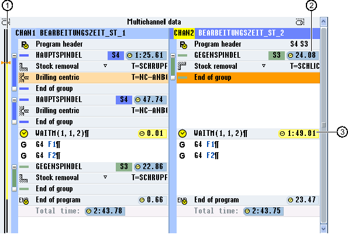

After the simulation or processing of the program in automatic mode, the measured processing time of the program blocks are displayed to you depending on the setting.
For a multi-channel display, the wait times that occur are displayed at the wait points (WAIT marks). This provides you with an overview of the time sequence of the program and you can perform the first optimization runs.
At the end of the program, the total runtime for each channel is shown.
The actual time is recorded during time measurement, i.e. override and similar actions are included in the time measurement.
Shifting blocks
You have the option of shifting program blocks to longer wait points - assuming that the machining technology permits this - therefore reducing the machining time.
Time-related view
In the time-related view, the wait times at the WAIT marks as well as the required machining times at the machining sections are displayed. If you change the program, time data is still displayed at the corresponding WAIT marks or the corresponding blocks dimmed.
The determined times are lost if you exit the editor using the "Close" softkey or you open or select another program. The times must be determined again through simulation.
① | Timeline for each displayed channel Processing times are displayed in black, wait times in yellow. The actual cursor position is highlighted in orange. |
② | Machining time |
③ | Wait time for the parallel program |
Time synchronous view